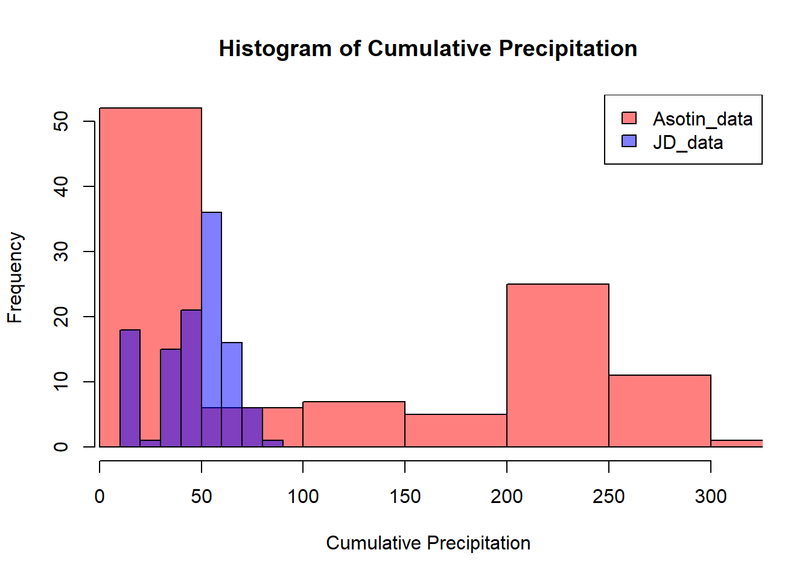
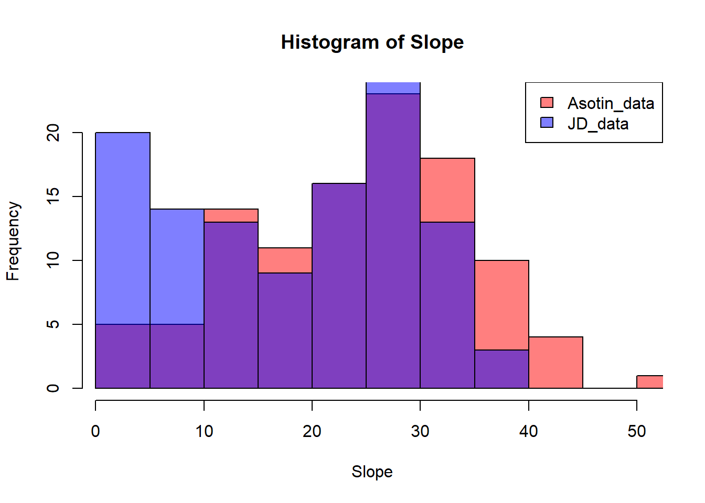
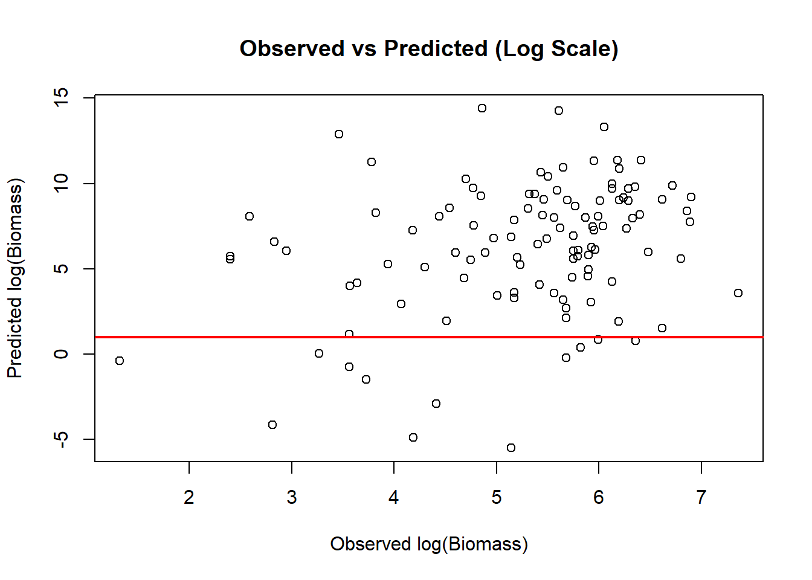
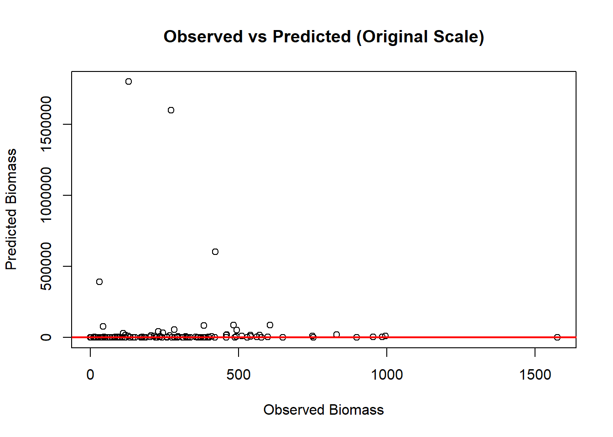

John Day Suitable Biomass Predictions using Asotin GAM
Author
Alexis Means
Published
January 20, 2026
Asotin Data
Below is the final Asotin model and an example of Katey’s dataset. I made some adjustments to the John Day categorical variables (PVT and Fire Category) to match her data structure. The “Intermediate” and “Scabland” PVT types were combined into “Shrubland” because Katey’s dataset didn’t include these categories. I also classified all Fire Category observations as “pre-fire”.
Code
###############################################################################load packages################################################################library(terra)library(mgcv)library(dplyr)library(stringr)library(readxl)library(tidyverse)library(sf)library(readxl)###############################################################################Import study area file#######################################################study.area =vect("C:/Users/Alexis Means/Documents/Project/Nutrition Sampling/2025_GRTS/summer24_MCP-buffer-.5mi/summer24_MCP-buffer-.5mi.shp")study.area =project(study.area,"EPSG:32610")###############################################################################Import models################################################################Asotin =readRDS("C:/Users/Alexis Means/Documents/Project/Nutrition Sampling/R code/GAM/Asotin-Full-FinalModel.RDS")Asotin_data <-model.frame(Asotin)summary(Asotin)
hist(Asotin_data$CumPPT, col =rgb(1, 0, 0, 0.5), main ="Histogram of Cumulative Precipitation", xlab ="Cumulative Precipitation", xlim =range(c(Asotin_data$CumPPT, JD_data$CumPPT), na.rm =TRUE))hist(JD_data$CumPPT, col =rgb(0, 0, 1, 0.5), add =TRUE)legend("topright", legend =c("Asotin_data", "JD_data"), fill =c(rgb(1, 0, 0, 0.5), rgb(0, 0, 1, 0.5)))

Katey calculated cumulative precipitation starting on March 1st. I followed the same process but used March 15th as the start date for the John Day dataset. I could re-extract and recalculate from March 1st, but I think this would likely have minimal impact on the John Day precipitation range. I also verified that both datasets use millimeters of precipitation per day as the unit of measurement. I guess the John Day region receives substantially less rainfall than Asotin. This could reflect the rain shadow effect created by the Cascades.
Code
hist(Asotin_data$HLI, col =rgb(1, 0, 0, 0.5), main ="Histogram of Heat Load Index", xlab ="HLI", xlim =range(c(Asotin_data$HLI, JD_data$HLI), na.rm =TRUE))hist(JD_data$HLI, col =rgb(0, 0, 1, 0.5), add =TRUE)legend("topright", legend =c("Asotin_data", "JD_data"), fill =c(rgb(1, 0, 0, 0.5), rgb(0, 0, 1, 0.5)))
Code
hist(Asotin_data$NDVI, col =rgb(1, 0, 0, 0.5), main ="Histogram of NDVI", xlab ="NDVI", xlim =range(c(Asotin_data$NDVI, JD_data$NDVI), na.rm =TRUE))hist(JD_data$NDVI, col =rgb(0, 0, 1, 0.5), add =TRUE)legend("topright", legend =c("Asotin_data", "JD_data"), fill =c(rgb(1, 0, 0, 0.5), rgb(0, 0, 1, 0.5)))
Some of the NDVI values fall just outside of Katey’s range. These are likely from our fall sampling efforts. I could go back and remove those observations to see if that brings the data range closer to hers. I used Katey’s scripts to calculate NDVI, so they should be calculated correctly.
Code
hist(Asotin_data$Slope, col =rgb(1, 0, 0, 0.5), main ="Histogram of Slope", xlab ="Slope", xlim =range(c(Asotin_data$Slope, JD_data$Slope), na.rm =TRUE))hist(JD_data$Slope, col =rgb(0, 0, 1, 0.5), add =TRUE)legend("topright", legend =c("Asotin_data", "JD_data"), fill =c(rgb(1, 0, 0, 0.5), rgb(0, 0, 1, 0.5)))

Code
hist(Asotin_data$DEMCub, col =rgb(1, 0, 0, 0.5), main ="Histogram of Digital Elevation Model Cubed", xlab ="DEM cubed", xlim =range(c(Asotin_data$DEMCub, JD_data$DEMCub), na.rm =TRUE))hist(JD_data$DEMCub, col =rgb(0, 0, 1, 0.5), add =TRUE)legend("topright", legend =c("Asotin_data", "JD_data"), fill =c(rgb(1, 0, 0, 0.5), rgb(0, 0, 1, 0.5)))
I talked with Emily about the elevation gradient of Asotin Creek. From what she recalls, the elevation there ranges from approximately 700 to 3,000 ft. The John Day is somewhat similar, though our maximum elevation is typically around 2,200 ft. Our data still falls within Asotin Creek’s range, so this shouldn’t be a major limitation for the predictions.
Code
hist(Asotin_data$MeanTempCub, col =rgb(1, 0, 0, 0.5), main ="Histogram of Mean Temp Cubed", xlab ="Mean Temp Cubed", xlim =range(c(Asotin_data$MeanTempCub, JD_data$MeanTempCub), na.rm =TRUE))hist(JD_data$MeanTempCub, col =rgb(0, 0, 1, 0.5), add =TRUE)legend("topright", legend =c("Asotin_data", "JD_data"), fill =c(rgb(1, 0, 0, 0.5), rgb(0, 0, 1, 0.5)))
A few values for mean daily temperature in the John Day fall just outside of Katey’s range. I’m not sure if these differences are large enough to significantly impact the prediction accuracy.
Predictions and Graphs
The predictions for Suitable Biomass are all over the place. Since the Asotin model uses log-transformed Suitable Biomass, I back-transformed the predictions to compare them on the original scale. I also kept the log-transformed versions of both observed and predicted values for comparison. The log-scale predictions look a bit better than the original-scale ones, but the model still isn’t predicting well for the John Day dataset.
I created a couple of visualizations to see how well the Asotin GAM is predicting. The first set of histograms shows the distribution of predicted versus observed suitable biomass. While the observed values fall within the predicted range, the Asotin GAM predictions are much more spread out, with most predictions falling just above the actual observed values.
Code
#removing a point, something weird is going on with the Slopeprediction.df <- prediction.df %>%filter(Slope !=32767)##visualization of histogram for predicted vs measured suitable biomassprediction.df %>%pivot_longer(cols =c(Observed_SB_L, Predicted_SB_L), names_to ="Type", values_to ="Value") %>%ggplot(aes(x = Value, fill = Type)) +geom_histogram(bins =30, alpha =0.6, position ="identity") +labs(x ="Suitable Biomass(Log)", y ="Count", title ="Observed vs Predicted Distributions") +theme_minimal()
The red line in these graphs represents a 1:1 ratio where predictions would perfectly match observations. For the most part, the Asotin model predicts slightly above the observed values on the log scale. However, when I back-transform these predictions to the original scale, some values blow up to extremely large numbers. This aligns with the histogram above, the Asotin model is consistently overpredicting suitable biomass compared to what we actually observed in the John Day dataset.
Code
# Log scaleplot(prediction.df$Observed_SB_L, prediction.df$Predicted_SB_L,xlab ="Observed log(Biomass)", ylab ="Predicted log(Biomass)",main ="Observed vs Predicted (Log Scale)") %>%abline(0, 1, col ="red", lwd =2) # 1:1 line

Code
# Original scaleplot(prediction.df$Observed_SB, prediction.df$Predicted_SB,xlab ="Observed Biomass", ylab ="Predicted Biomass",main ="Observed vs Predicted (Original Scale)")abline(0, 1, col ="red", lwd =2)

When I plotted the residuals (Observed Biomass - Predicted Biomass), there was a clear negative trend. Which I believe means the model is systematically off, it is underpredicting low biomass and overpredicting high biomass.
Code
# Calculate residualsprediction.df <- prediction.df %>%mutate(residuals_log = Observed_SB_L - Predicted_SB_L,residuals_original = Observed_SB - Predicted_SB)# Residuals vs Predictedplot(prediction.df$Predicted_SB_L, prediction.df$residuals_log,xlab ="Predicted log(Biomass)", ylab ="Residuals",main ="Residuals vs Predicted (Log)")abline(h =0, col ="red", lty =2)lowess_line <-lowess(prediction.df$Predicted_SB_L, prediction.df$residuals_log)lines(lowess_line, col ="blue", lwd =2)
What’s next
I reached out to Katey to ask for a version of the Asotin model without the Fire Category variable. Since everything in my dataset is classified as “Pre-Fire,” I’m not sure how much that’s skewing the predictions.
Do you have any suggestions for identifying what might be causing the Asotin model to predict so poorly for John Day?
I’m trying to think of ways to improve model transferability across study systems. I’m wondering if scaling all the covariates in the Asotin model before fitting would improve predictions and make them more comparable between different study systems. What are your thoughts on this?